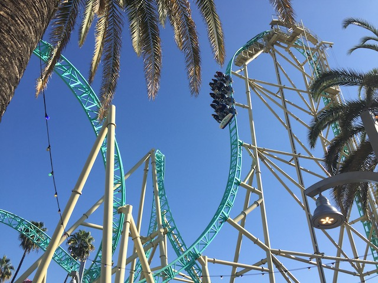
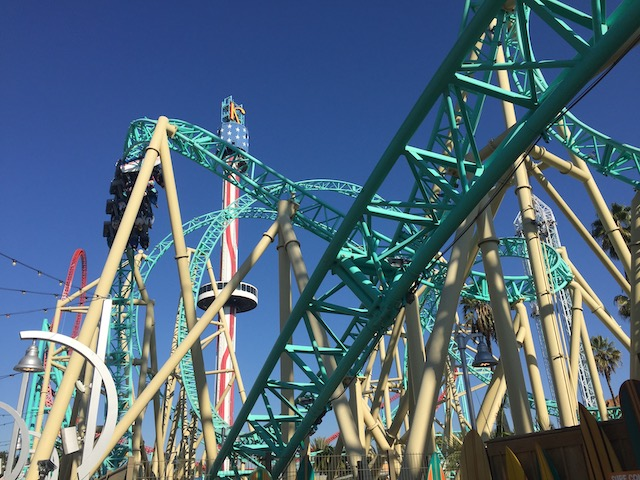
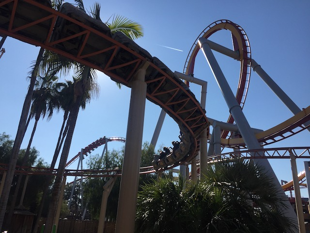
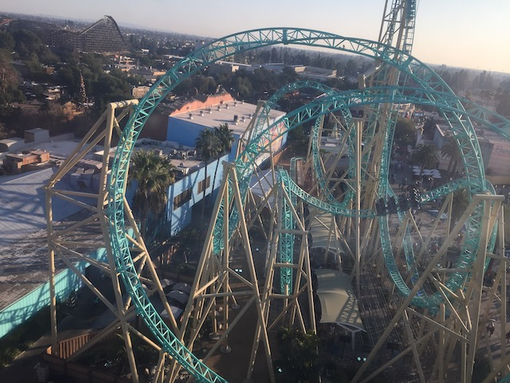

| |
Incrediblecoasters Winter 2022
 All right. So we naturally did some more park visits around the holidays to check out their Christmas events. But....I was debating whether this would be worthy of an update. I'm so backlogged, so busy, and is there anything new with the events worth adding onto Incrediblecoasters? I don't have enough to qualify for a full blown two-part update. However, there's still some decent photos and a couple fun moments and peices of news I wanted to discuss. So I decided to just do a single smallish update for my holiday visits to both SFMM & KBF, as well as a couple of winter visits that are worth bringing up.
All right. So we naturally did some more park visits around the holidays to check out their Christmas events. But....I was debating whether this would be worthy of an update. I'm so backlogged, so busy, and is there anything new with the events worth adding onto Incrediblecoasters? I don't have enough to qualify for a full blown two-part update. However, there's still some decent photos and a couple fun moments and peices of news I wanted to discuss. So I decided to just do a single smallish update for my holiday visits to both SFMM & KBF, as well as a couple of winter visits that are worth bringing up.
When was the last time I actually bothered riding this ride?
Ooh. I see the walls have gone up for Wonder Woman.
Ugh. How many horrendous movies about an evil snowman has this asshole starred in?
Holy Crap! It's only December and Wonder Woman already has footers! Yeah. RMC is the one company that actually forces SFMM to open their new coasers at least semi-on time.
Hmm. What's going on with Tatsu?
So Tatsu is finally getting a new paint job. First off, it was long overdue for one. But on top of that, I actually really like the orange and green. It fits the ride better than the previous colors that screamed "McDonalds" more than Tatsu. Big thumbs up on this paint job.
So Superman actually went a big change. They turned it back forewards. Now while I greatly prefer it backwards and gushed about that when they first turned it backwards, I don't mind this for two reasons. #1. It's a choice. You can choose to go forewards OR backwards. OK. It varies on the day. Sometimes, you go forewards. Sometimes, you go backwards depending on which side is running (Hey look. The side you ride on actually means something this time).
It actually was a lot better forewards than I remembered. I think the new cars just make the ride go faster (or at least feel faster). Maybe because these are lighter, it can go faster. Not sure. Just a hypothesis (I don't do math or physics. I barely survived those subjects in High School and abandoned them the second I completed them as my GE Classes in college).
Pretty sure nothing has actually changed in this establishment and that this is just a change in name simply for Holiday in the Park.
 Ooh. I like seeing West Coast Racers all dressed up for Christmas (Ironic since that's when I first rode it).
Ooh. I like seeing West Coast Racers all dressed up for Christmas (Ironic since that's when I first rode it).
 Still happy they always force the ride to race. =)
Still happy they always force the ride to race. =)
Pretty sure this little gummy burger at SFMM costs more than a real burger at a fast food place down the street. ;)
Please have Mr. Six dressed like Santa Claus dancing here to Vengaboy's "We Like to Party (Christmas Edition) (HOLY SH*T!! I THOUGHT I WAS JUST JOKING, BUT I JUST LEARNED THAT THAT ACTUALLY EXISTS!!)" (Seriously, bring him and those commercials back).
*gasp* There's a tree at SFMM!!! We must chop it down! Hurry! Before Ninja hits it!
Jason spending time with his relatives for the holidays.
 *gasp* I'm riding Canyon Blaster on this visit!? That can only mean one thing!
*gasp* I'm riding Canyon Blaster on this visit!? That can only mean one thing!
That's right! We're with a credit whore friend who needs the SFMM Kiddy credits. Except unlike everyone else, who's from out of town, Brandon's just a coaster enthusiast newbie who needs to get his credit whoring at his home parks out of the way.
OK. That's enough SFMM! Time to move on over to our other home park, Knotts Berry Farm.
For me!? Aww, you shouldn't have. =)

*gasp* Hangtime opened back up!? Gotta get back on it!

It may not be my favorite ride at Knotts, but it's still a really good ride that I enjoy riding whenever I visit the park.
So Tatsu isn't the only coaster in SoCal getting a new paint job.
*Sigh* Now while I really liked the new paint job on Tatsu, I sadly can't say the same thing about Xcelerator's new paint job. Not only do I not like this new paint job, but this honestly has to rank as my official least favorite paint job on any coaster. I REALLY hate the paint job. I was initlly confused about the colors since....I first was thinking nothing about the paint job other than "Good. Xcelerator needed a new paint job. Not a huge fan of the replacement color. But whatever". But then I saw them painting part of the track black. Uh....what are you doing? Is this a test paint job? Did you change your mind or something!? Now you're painting parts yellow and orange!? What the f*ck is going on here!? No. This is the paint job. It's ALL the paint job. It's ALL the colors! I HATE IT SO F*CKING MUCH!!!! Apparently the low to the ground parts are black to represent pavement. The red and yellow represent flames caused by you going so fast and are at all points where you go up. And then all the parts in the sky and the elements are all red, the color I was just initally expecting the ride to be. Hey Knotts! If you have to give some convoluted backstory or code to inerpret in order to understand the choice you made to understand the choice in color for your coaster, then it was bad color choice. >=(
Fun ride, but it honestly doesn't feel that different from all the other S&S Towers.
Come on. Start running like Samarui @ Lagoon. It's so much better that way.
It may not be my favorite B&M, but it's still a fun ride worth popping on (provided the line is relatively short).

GAH!!! So close to having a dueling shot (Yeah. This technically is one with Silver Bullet in its Overbank in the background. But it would've been so much better in the loop). =(
It may not have been as good as anything from the Boysenberry Festival, but this was still pretty good (it's a lot better than it looks).
This wouldn't be worth it if it was just an ordinary Wild Mouse. But with the horrendous shin-guards? F*CK NO!!!
Xcelerator from the Sky Cabin.

Love this shot of Hangtime from the Sky Cabin.
Hey Knotts! Christmas is over! Take down the Knotts Merry Farm sign!
YAY!!! XCELERATOR IS BACK OPEN!!! I may hate the new color, but I'm at least super happy to have it open as the star attraction at Knotts Berry Farm.
First coaster of 2022.
Though for as happy as I am that Xcelerator reopened, this is the real reason for today's semi-spontaneous mini-vist (less than 3 hours).
So shortly after New Years Day, Knotts announced that Montexoomas Revenge would have its last weekend in a couple weeks and then it would be closed until Summer 2023 for a giant makeover. Now this is obviously a big bummer as Montezooma is a big classic and something really worth riding. Having it closed for the entire year is a real bummer. However, despite that, I'm still really happy that they're doing this. Mainly because this proves that they CARE ABOUT MONTEZOOMAS REVENGE!!! If you haven't noticed these past few years, Cedar Fair is very trigger-happy to demolish any sort of old rides that require more maintenence than a lot of the newer stuff today (Kings Island & Kings Dominion say hello). So them doing this shows that instead of going down this route and removing a super rare Shchwarzkoph Shuttle Loop (Really hope that the one from Mexico is able to relocated to Martin's Fantasy Island successfully like they're planning on doing. I'm rooting for that project to succeed), they're putting in the maintenence to give this ride new life, which I really appreciate. Sure, I may have some complaints about the actual make-over (though I'll wait to see how they play out before offically judging. Hopefully, I'll be caught-up by the time it reopens), I'm just happy this ride is getting new love. And of course, I have to get a goodbye for now ride.
"Please hang out with me Kevin. All my other friends are assholes to talk sh*t about me, and my dog seems relatively apathetic to me. Good grief, I need a friend."
Ooh. What's going on here?
Coming to Knotts Berry Farm for 2022! A new resteraunt!
The benefits of having a boyfriend who works at the park. =)
All right. Back to Six Flags Magic Mountain for another visit here. And yeah. You can't visit the park without getting on this amazing ride.
The benefits of visiting the park on a weekday in February.
Sorry, but the Goliath photo booth is permanently closed. You assholes are so ugly that you broke the camera.
 And....Wonder Woman has offically gone vertical. Normally, this wouldn't be anything to scream about. But....this is SFMM. Infamous for their slow as molasses construction. By their standards, this is being built at lightning speeds.
And....Wonder Woman has offically gone vertical. Normally, this wouldn't be anything to scream about. But....this is SFMM. Infamous for their slow as molasses construction. By their standards, this is being built at lightning speeds.
 How much longer until we actually see some track to go with those supports?
How much longer until we actually see some track to go with those supports?
One of the few non-coasters actually worth riding reguarly at this park (Just this, Lex Luthor, and Justice League).
Seriously. Always keep your vaccine card either in your wallet or on your phone. Yeah, it's a pain in the ass. But the idiot Anti-Vaxxers force this on all of us *groan*.
So because Jason is such a huge fan of Go-Karts, he always makes it a priority to ride Cyclone 500. Usually while we're riding West Coast Racers. However, since the park is so dead, I actually rode it with him this time (I think that for the countless times I visited this park and almost 3 years I spent as an employee working here, this might be the first time I EVER did the Go-Karts, making them the ONE ride at SFMM, excluding Bugs Bunny World, that I hadn't been on until today). And....HOLY SH*T!!! This was NOT meant to fit two adults. I know technically it's supposed to. But....I DID NOT FIT HERE!!! And we're skinny (well at least I am)! There was so little room that I couldn't even sit in the go-kart. I was practically laying down during the ride. And.....yeah. Jason drove it with me in that position. And.....what would otherwise be lame and boring go-karts actually was really fun in this direction. Partially due to not knowing what was going on and just seeing sky, and partially just laughing at the sheer absurdity of what I was doing and that I was actually able to do this at all! Thanks for making what would otherwise be a boring ride actually a lot of fun and kind of crazy!
Yeah. We gotta stop here since we're here with Jason who's not into huge roller coasters. Luckily, it's so dead today that we were just able to get on with no problems.
 And of course, we have to ride X2 whenever at SFMM. Thank you both Six Flags Magic Mountain and Knotts Berry Farm for a series of fun little mini-visits, taking care of your parks, and some truly wacky and absurd moments of fun.
And of course, we have to ride X2 whenever at SFMM. Thank you both Six Flags Magic Mountain and Knotts Berry Farm for a series of fun little mini-visits, taking care of your parks, and some truly wacky and absurd moments of fun.
Home
|